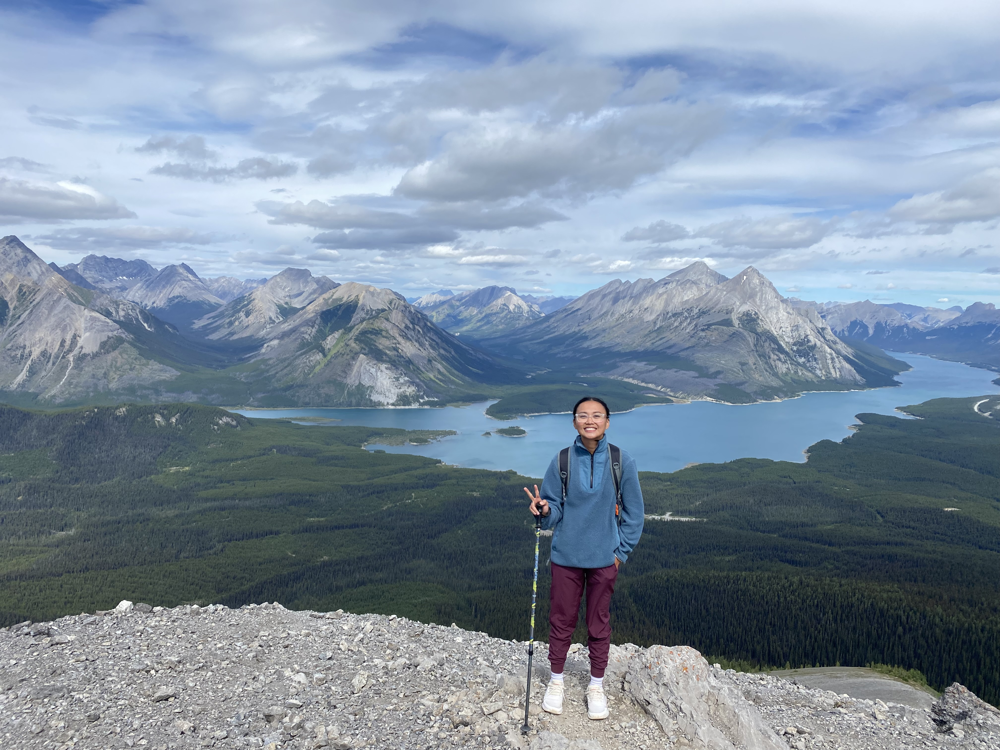
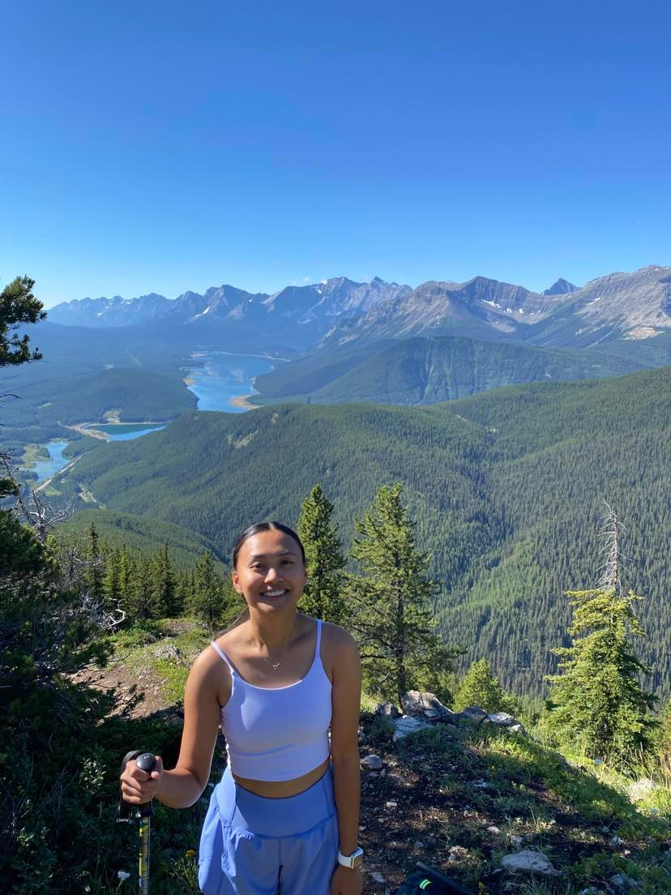
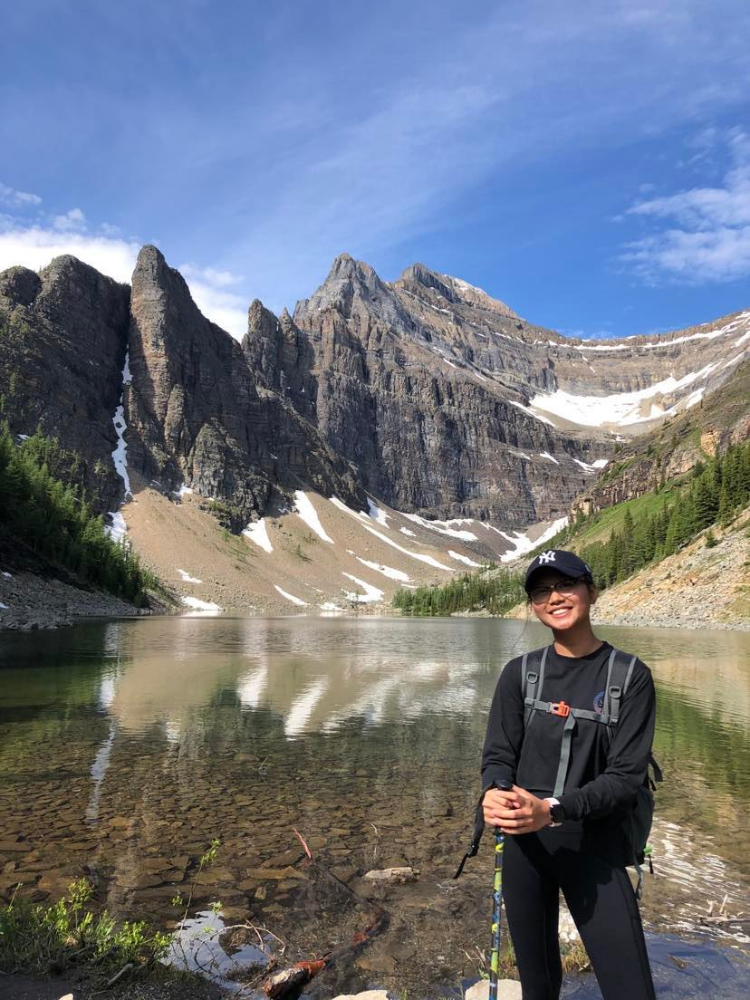

As a hiking enthusiast, I am constantly drawn to the outdoors and the sense of freedom that comes with exploring nature.
Hiking is more than just a hobby for me, it's a passion that allows me to disconnect from the stresses of everyday life
and connect with the natural world.
Tent
Ridge
Horseshoe
Tent Ridge Horseshoe in Kananaskis Country offers a challenging trail with stunning views of the surrounding peaks and valleys.
The scramble over rocky terrain to reach the summit was well worth it.

South
Lawson
Peak
South Lawson Peak offers a beautiful view of the surrounding mountains and valleys.
The rocky terrain adds a fun challenge to the hike, and the rewarding views at the end are well worth the effort.

Prairie
Mountain
Prairie Mountain in Alberta, Canada offered a challenging hike with steep inclines and rocky terrain.
The stunning views of the surrounding peaks and valleys made the climb worth it.

Lake
Agnes
Located in Banff National Park, Lake Agnes is a picturesque hike that takes you through stunning alpine scenery.
The trail leads you to the crystal clear Lake Agnes, surrounded by towering mountain peaks.
The historic Lake Agnes Tea House offers a great spot for a refreshing break and a cup of tea.
